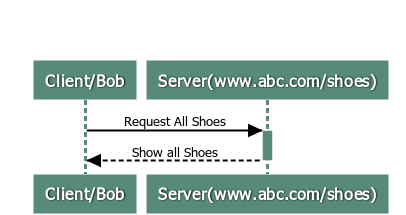
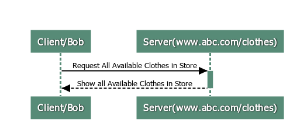

In this blog am going to take you through step by step process to create a ChatApplication. You guys might have come across many applications where you can join a chat room and then send messages to different people in that room. We will do the same using SignalR package. In the process of doing it we will also learn how the SignalR works.Though this blog is mainly focused on learning SignalR, it will be beneficial to know the basics.
Basics RequiredSo What is SignalR Ever wondered how chat applications work? How do people chat with each other (either in a group or a private chat with one person). You might be aware of client server architecture and you may get that this approach won’t work in chat room applications. So, lets take a step back and understand what is client server architecture and how it is different from chat applications In Client Server architecture, Client i.e the Browser(Chrome, Internet Explorer etc) makes a request for a particular Resource on the Web. Let’s take an eg to understand better. Suppose there is a shopping website which sells “Shoes” and “Clothes”. Lets also assume that www.abc.com/shoes is the endpoint for shoes and in in www.abc.com/clothes is the endpoint for clothes Consider there is a User called Bob and he types in www.abc.com/shoes on the browser. The request goes to the Server and the Server processes the request and returns all the shoes on their website. Bob sees all the shoes he wanted to see. Now he decides to see all clothes on abc website and therefore enters www.abc.com/clothes and this time Server shows all results of clothes to Bob. Bob is happy 😊.
 Now as you may be aware HTTP calls are stateless. What that means is that Server doesn’t know that it was the same User Bob who made a request to Display all Clothes and Shoes in the store .As far as Server is concerned, it just got the request from the Client and it responded by serving it. If we need the server to remember the Client, then we either need to use HTTP Cookies, maintain Server Side Sessions,hidden variable,URL-rewritring etc. Going to depth of these is out of scope of this blog. Now If you go back to eg of Bob, it was Bob/Client who was requesting the Server for details everytime and not the other way around. If you wait a second and absorb above details and give a thought about it,you can find that above approach is not a efficient way to develop any chat applications.This is where Push Architecture comes into picture. What it means is that the moment server receives any message, it pushes the message to all the clients connected to it.
A navigation bar is a navigation header that is placed at the top of the page.